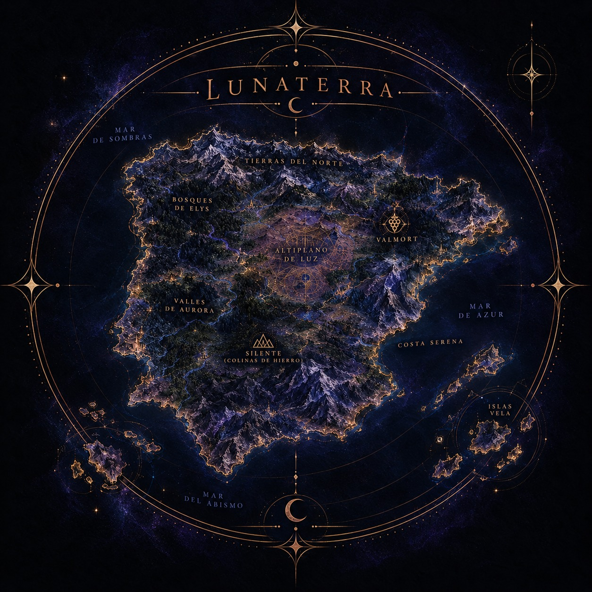

Lunaterra
Un mundo que parecía normal.
Geografía de Lunaterra
Registro cartográfico del territorio conocido.

Directorio de Lunaterra
Instituciones, establecimientos, residencias y lugares de interés registrados.
Instituciones
Universidad SOMA Institución · Universidad +
Una de las universidades más prestigiosas de Lunaterra, vinculada a Bastión.
Consultar archivo de SOMA ↗
Universidad REAH Institución · Universidad +

Establecimientos
Lúdika Eventos Establecimiento · Antigüedades y eventos esotéricos +
Lúdika Eventos es una empresa dedicada a la organización de eventos relacionados con el esoterismo, el tarot y la magia. Su actividad se desarrolla entre una pequeña tienda de antigüedades, donde Eleanor Eynard realiza sus sesiones de tarot, y un edificio de mayores dimensiones destinado al resto de las operaciones de la empresa.
Eleanor, tarotista y CEO de Lúdika Eventos, ha convertido la tienda en un lugar de encuentro habitual para quienes necesitan reunirse con ella. Con el tiempo, tanto el establecimiento como su propietaria han adquirido una relevancia especial dentro de los acontecimientos de Lunaterra.
Cafetería Raven Establecimiento · Cafetería +
Situada en el centro de la ciudad, la Cafetería Raven es un establecimiento corriente que, con el tiempo, se ha convertido en escenario de algunos encuentros significativos. Entre ellos, la conversación de Selene con su abuela y la posterior visita de Syra a Anabella para darle el pésame tras la muerte de Selene.
Más allá de estos momentos, no presenta ninguna particularidad destacable.
Hotel Monteclaro Establecimiento · Hotel +
Un establecimiento hotelero de Lunaterra que, pese a su apariencia ordinaria, quedó vinculado a los acontecimientos relacionados con Origen. Entre sus paredes tuvieron lugar dos muertes que contribuyeron a completar los diez órganos cristalizados, convirtiéndolo en un escenario relevante dentro de los registros conocidos.
Residencias
Casa de los Valmont Residencia · Patrimonio familiar +
Una lujosa mansión que constituye el hogar y uno de los principales símbolos del patrimonio de la familia Valmont, una de las más adineradas e influyentes de Lunaterra. Acostumbrados a los privilegios de la alta sociedad, los Valmont representan una tradición familiar marcada por el prestigio, la exclusividad y el cuidado de su reputación.
Su fortuna está ligada a la marca: Valmont, la marca vinícola más famosa de Lunaterra, cuyo reconocimiento ha convertido el apellido familiar en sinónimo de calidad y distinción. La propiedad alberga una de las bodegas de la empresa, integrando parte de su actividad empresarial en el propio entorno residencial.
Más que una simple vivienda, la mansión es un reflejo de la posición social de sus habitantes y del legado que la familia ha construido a lo largo de los años. Un lugar donde el lujo y las tradiciones familiares forman parte de la vida cotidiana.
Residencia de Syra Residencia · Vivienda particular +
Una pequeña vivienda situada en uno de los barrios más desfavorecidos de Lunaterra, una zona marcada por la precariedad económica y los elevados índices de delincuencia, próxima a la Universidad SOMA. El reducido tamaño del inmueble y las condiciones de su entorno contrastan con las residencias acomodadas que pueden encontrarse en otras partes de la ciudad.
La vivienda fue el hogar de Syra antes de su incorporación a Bastión. Aunque conservó el alquiler durante unos meses tras su ingreso en la organización, terminó por abandonarlo para establecerse a tiempo completo en las instalaciones de Bastión.
Residencia de Elías Residencia · Propiedad privada +
Una extensa mansión de estilo rústico rodeada de vegetación, jardines cuidadosamente mantenidos y amplios terrenos que convierten la propiedad en un lugar casi idílico. Entre sus instalaciones destacan una pista de golf, una piscina y un laberinto de setos que recorren parte de sus jardines, componiendo un entorno donde la naturaleza y el lujo conviven en armonía.
Alejada del aspecto urbano de otras residencias de Lunaterra, la propiedad ofrece amplitud, tranquilidad y privacidad. Ha sido el hogar de Elías durante muchos años, convirtiéndose en el escenario habitual de buena parte de su vida cotidiana.

Residencia de Garret Residencia · Propiedad privada +
Una enorme mansión de arquitectura contemporánea, caracterizada por su estética minimalista, sus espacios amplios y una integración tecnológica que alcanza prácticamente todos los rincones de la vivienda. El diseño combina líneas limpias y una decoración limpia con sistemas tecnológicos avanzados, convirtiendo la propiedad en un ejemplo de modernidad y funcionalidad.
La tecnología constituye uno de los elementos centrales de la casa, presente tanto en la gestión de sus instalaciones como en las comodidades del día a día. Todo está pensado para ofrecer un entorno eficiente, automatizado y adaptado a las necesidades de su propietario, donde la innovación y el confort van de la mano.

Residencia de Hera Residencia · Vivienda particular +
Un amplio piso acondicionado al gusto de Hera, donde la comodidad y las preferencias personales tienen prioridad. La vivienda cuenta con espacios bien adaptados a sus necesidades, entre los que destaca un gran armario, pensado para mantener organizado su vestuario y disponer de espacio de sobra para sus pertenencias.
Sin embargo, Hera no es la única que disfruta de una casa hecha a medida. Tikismikis, su gata, dispone de sus propios espacios y comodidades, con rincones preparados para satisfacer sus particulares exigencias. Al fin y al cabo, parece que en esta casa hay alguien que tiene muy claro quién manda.
Residencia de Kael Residencia · Vivienda particular +
Un dúplex de estética minimalista donde el orden y la limpieza son elementos fundamentales. Sus espacios, organizados con cuidado y libres de elementos innecesarios, transmiten una sensación de pulcritud y sencillez, con una distribución pensada para aprovechar al máximo cada rincón sin renunciar a la comodidad.
La vivienda refleja un estilo de vida práctico y estructurado, en el que cada cosa parece tener su lugar. Sin embargo, pese a contar con un hogar propio, Kael apenas pasa tiempo allí. Sus responsabilidades y su vida cotidiana lo mantienen habitualmente en Bastión o en casa de Vera, por lo que su dúplex queda relegado a un segundo plano.
Residencia de Vera Residencia · Vivienda particular +
Una vivienda de ambiente cálido y acogedor, donde prima la comodidad y se respira una sensación de hogar. Lejos de la sobriedad de otros espacios, la casa de Vera es un lugar pensado para disfrutar de la tranquilidad y compartir tiempo en buena compañía.
Con el paso del tiempo, se ha convertido en un punto habitual de encuentro para Vera y Kael, que pasan allí buena parte de su tiempo juntos. Más que una simple residencia, representa un espacio de confianza y cercanía al que regresar lejos de las obligaciones del día a día.
Residencia de Darian Residencia · Propiedad privada +
Una imponente mansión de arquitectura moderna que refleja el prestigio y la enorme fortuna de la familia de Darian. Sus instalaciones y su diseño elegante son el reflejo de una familia perteneciente a los círculos más privilegiados de Lunaterra, acostumbrada al lujo y a una posición social destacada.
La propiedad fue el hogar de Darian junto a sus padres y se convirtió en el escenario de la fiesta de inauguración de la universidad, una celebración en la que coincidieron y se conocieron gran parte de los protagonistas. Sin embargo, aquella noche quedó marcada por la muerte de Anais, la primera víctima de Origen y el suceso que dio comienzo a los acontecimientos del rol.
Residencia de Amara Residencia · Vivienda particular +
Situada dentro de una comunidad residencial, la casa de Amara destaca por su estilo maximalista, donde la abundancia de elementos decorativos y la mezcla de estilos convierten cada espacio en un lugar lleno de personalidad. Lejos de la sobriedad y el minimalismo de otras viviendas de Lunaterra, su hogar apuesta por la expresividad y una estética en la que los detalles tienen un papel protagonista.
La vivienda refleja una forma de entender los espacios en la que más es más, dando lugar a un ambiente con carácter propio que no pasa desapercibido.
Residencia de Elara Residencia · Vivienda familiar +
Un acogedor chalet de clase media, con un patio delantero y otro trasero que completan el aspecto hogareño de la propiedad. Lejos del lujo de las grandes mansiones de Lunaterra, la vivienda destaca por su sencillez y calidez, reflejando la vida cotidiana de una familia que ha hecho de ella su hogar durante muchos años.
La casa ha sido el hogar de la familia Vael durante generaciones y, aunque Syra y Kael abandonaron la residencia familiar hace aproximadamente siete años para independizarse, sus antiguos dormitorios continúan conservándose con el mismo cariño. Lo mismo ocurre con el antiguo despacho de Zarek, el padre de la familia, desaparecido antes del nacimiento de Syra, cuyo espacio permanece intacto dentro del hogar. La vivienda guarda así una parte de la historia de los Vael, preservando entre sus paredes los recuerdos de quienes han formado parte de ella.
Lugares destacados
Planta de Reciclaje Lugar destacado · Acceso a Bastión +
A simple vista, la planta de reciclaje parece un establecimiento dedicado al tratamiento y la gestión de residuos. Sin embargo, su verdadera importancia reside en albergar una de las entradas a Bastión, oculta tras una apariencia cotidiana que permite mantener su existencia fuera de miradas indeseadas.
En sus instalaciones se encuentra el punto desde el que puede abrirse el portal que da acceso a Bastión. Para activarlo, es necesario introducir la contraseña correspondiente, convirtiendo este lugar en una entrada discreta pero fundamental para acceder a las instalaciones de la organización.
Oliveros Lugar destacado · Cortijo +
Situado en el barrio de Los Pisos del Rey, Oliveros es un cortijo rodeado de olivos que sirvió de asentamiento a los Iluminados de Baviera tras una conferencia celebrada en el barrio. Alejado de la apariencia de otros lugares de Lunaterra, el entorno rural de la propiedad oculta secretos que van mucho más allá de su aspecto apacible.
Fue entre sus olivos donde Syra descubrió un cobertizo que escondía una entrada a la cripta, accesible a través de uno de los portales de Origen. Aquel hallazgo reveló la conexión del lugar con la organización y con sus actividades. También fue el sitio donde Selene permaneció encerrada tras ser secuestrada, convirtiendo el cortijo en un escenario relevante dentro de los acontecimientos del rol.
Mansión de los Iluminados de Baviera Lugar destacado · Escenario de la gala +
Una lujosa mansión que sirve de escenario para una gala organizada por los Iluminados de Baviera. Tras la apariencia de una celebración exclusiva, el evento esconde propósitos mucho más siniestros: el sacrificio de seis personas con el objetivo de obtener los órganos cristalizados que necesita la organización.
La gala también se convierte en una macrofiesta marcada por el exceso y la desinhibición. Mientras los invitados se entregan a todo tipo de encuentros íntimos en las distintas habitaciones de la propiedad, los planes de los Iluminados avanzan entre las sombras. Un escenario donde el lujo, el desenfreno y la crueldad conviven bajo un mismo techo.
Psiquiátrico Lugar destacado · Instalación abandonada +
Un antiguo psiquiátrico abandonado que, durante un tiempo, fue utilizado por Origen como instalación temporal. Aunque el edificio había dejado de cumplir su función original, sus instalaciones terminaron albergando las actividades de la organización, convirtiéndolo en un lugar de interés para Bastión.
Fue allí donde Syra y Selene llevaron a cabo su primera misión real juntas, encargándose de investigar el lugar y descubrir qué estaba ocurriendo en su interior. Aquella investigación supuso uno de sus primeros acercamientos directos a las actividades de Origen y convirtió al antiguo psiquiátrico en un escenario significativo dentro de su historia.